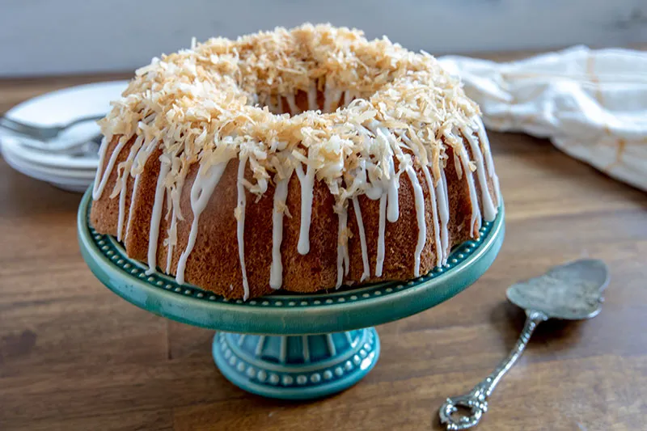
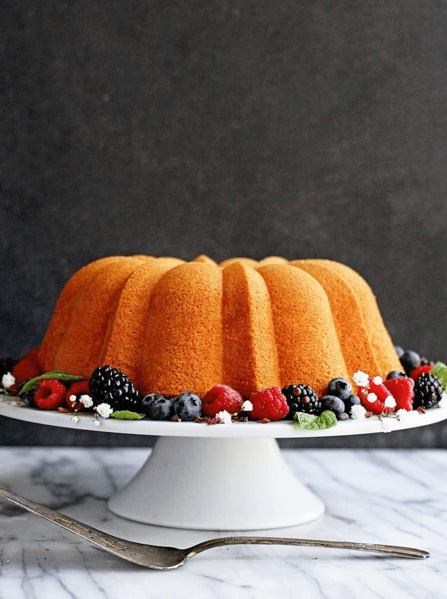
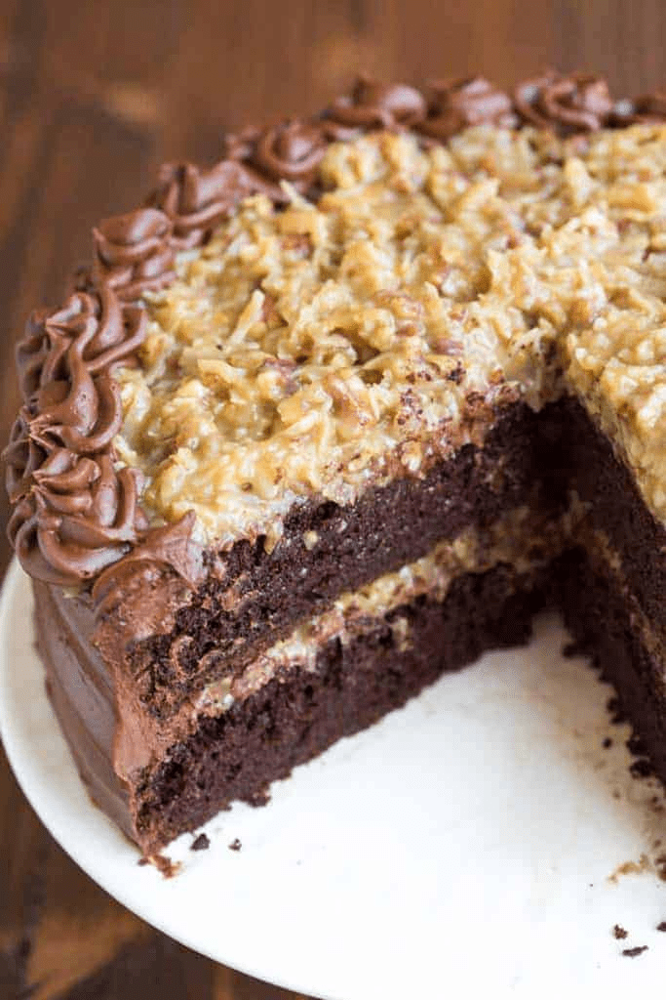

Classic Yellow Cake with Chocolate Frosting

The fluffy vanilla cake recipe is the absolute best yellow cake from scratch and paired with the silky smooth chocolate frosting, you can't beat it for a classic birthday on any other celebration!
Read more07/Jan
Coconut Bundi Cake with Chocolate-Coconut Glaze
This from-scratch cake is a pound cake and a bundt cake. If you prefer, you can make it in two 6 cup loaf pans, but I love using my 6 cup bundt pans.
Read more08/Jan
Cream Cheese Pound Cake with Chocolate-Coconut Glaze
This Cream Cheese Pound Cake Recipe is moist, tender, buttery and melt in your mouth. This is a Southern dessert classic recipe is passed down from generation to the generation that will always be a hit. With a lovely texture unlike my Kentucky Butter Cake, Sock It To Me Cake, Butter Pound Cake and Sour Cream Pound Cake, this is a recipe that stands out from all the rest!
Read more10/Jan
German Chocolate Cake with Chocolate-Coconut Glaze
The BEST homemade German Chocolate Cake with layers of coconut pecan frosting and chocolate frosting. This cake is incredible!
Read more11/Jan